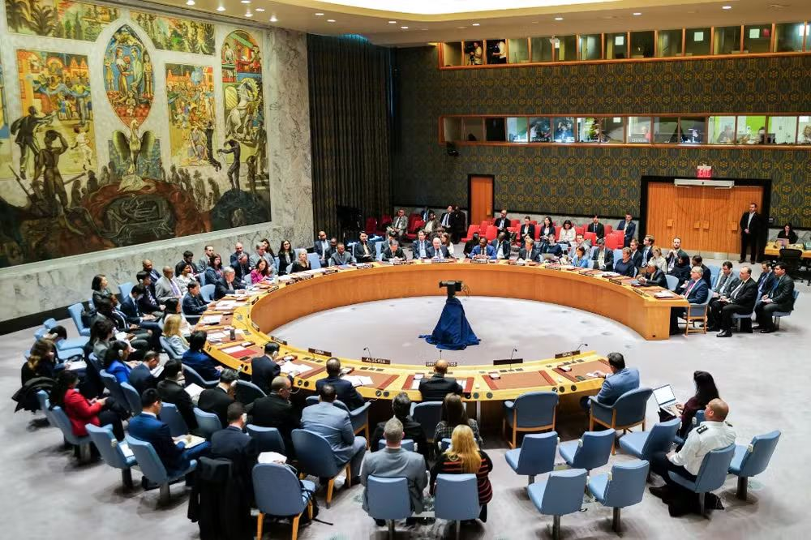
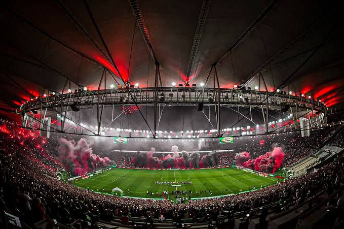

Sua fonte para as últimas notícias e atualizações.
Últimas Notícias

Conselho de Segurança da ONU aprova cessar-fogo na guerra na Faixa de Gaza
O Conselho de Segurança da ONU aprovou, nesta segunda-feira (10), uma resolução de cessar-fogo na guerra entre Israel e o grupo terrorista Hamas na Faixa de Gaza. O texto foi proposto pelos Estados Unidos, que pediu ao Hamas que a aceite. O placar da votação foi de 14 votos a favor, zero contra e 1 abstenção, da Rússia. "Hoje, o Conselho manda uma mensagem clara ao Hamas: aceite a proposta posta na mesa.
Israel já aceitou o acordo e os combates poderiam parar hoje, se Hamas fizer o mesmo. Repito: os combates poderiam parar hoje", afirmou a embaixadora dos EUA na ONU, Linda Thomas-Greenfield. Em uma primeira fase, o plano prevê os seguintes termos:
Cessar-fogo com duração de seis semanas
Recuo das forças Israel das áreas densamente povoadas da Faixa de Gaza
Libertação de certos reféns sequestrados durante o ataque do grupo terrorista Hamas e de prisioneiros palestinos detidos por Israel.
O acordo também envolve a distribuição de ajuda humanitária "em grande escala em toda a Faixa de Gaza", com 600 caminhões entrando no país por dia.
Em comunicado, o Hamas saudou a aprovação da resolução de cessar-fogo e afirmou que está pronto para cooperar com os mediadores para a implementação dos os princípios do acordo "que estão em consonância com as demandas de nosso povo e resistência". Israel ainda não se manifestou oficialmente até a última atualização desta reportagem.
Dólar volta a subir e fecha em R$ 5,35, com expectativa por inflação e juros nos EUA; Ibovespa cai
A moeda norte-americana fechou em alta de 0,61%, cotada a R$ 5,3567. Já o principal índice acionário da bolsa de valores brasileira encerrou em leve queda de 0,1%, aos 120.760 pontos.
O dólar fechou em alta nesta segunda-feira (10), tendo arrefecido parte do avanço visto pela manhã, quando chegou a ultrapassar a barreira dos R$ 5,38.
Investidores continuaram a monitorar eventuais sinais sobre o cenário fiscal do Brasil e seguiram de olho em uma série de indicadores importantes que devem ser divulgados ao longo desta semana.
Por aqui, as atenções seguem com o Índice Nacional de Preços ao Consumidor Amplo (IPCA), que deve ser divulgado na terça-feira. As projeções de mercado esperam uma nova alta do indicador, segundo a agência de notícias Reuters.
Já no exterior, a expectativa sobre a inflação dos Estados Unidos e seus reflexos nas decisões de juros do Federal Reserve (Fed, o banco central norte-americano) continua fazendo preço nos negócios. Tanto o índice de preços como a nova decisão de política monetária devem ser conhecidos nos próximos dias.

Athletico-PR se recupera e vira sobre o Flamengo na Arena da Baixada
Time carioca começa melhor, mas Furacão cresce na segunda etapa e é certeiro para ficar com a vitória.
O Athletico-PR se recuperou depois de sair perdendo e venceu o Flamengo por 2 a 1, na Arena da Baixada, pelo Campeonato Brasileiro. Gabigol abriu o placar de pênalti, mas Vitor Roque empatou ainda no primeiro. Depois do intervalo, o time carioca chegou a criar chances, mas o Furacão cresceu e virou o jogo com Erick. No lance do segundo gol, o goleiro Santos foi substituído após sofrer pancada na cabeça.
Com o resultado, o Athletico-PR chegou a seis pontos e sobe, momentaneamente, à décima posição da tabela.
O Flamengo, por sua vez, cai para a 16ª posição, uma acima da zona de rebaixamento. Mas pode dormir no Z-4 dependendo do resultado dos jogos que vão completar a rodada
Os visitantes começaram melhor na Baixada, com controle da posse de bola e das iniciativas de ataque, mas sem levar muito perigo. Até que, aos 14, Cebolinha fez bonita jogada individual e foi derrubado na área do Athletico. Gabigol cobrou bem e abriu o placar. A superioridade carioca terminou com um erro de Santos, que saiu do gol em um cruzamento despretensioso de Fernandinho na área, que acabou desviado por Vitor Roque para o gol vazio. Com o empate, o Furacão passou a marcar presença na área de Santos com perigo. No fim do primeiro tempo, o camisa 9 do Athletico pediu pênalti ao cair na área, mas Claus negou. Etapa equilibrada na Arena.
Uma mulher foi retirada do tapete vermelho do Festival de Cannes, na França, na noite de ontem (21), após fazer um protesto.
A manifestante jogou sangue falso em si enquanto usava um vestido com as cores da Ucrânia. Ela não foi identificada.
A mulher tirou as bolsas de sangue falso do decote e despejou o conteúdo sobre a cabeça antes de ser retirada à força do evento por seguranças. Ela participava da estreia do filme "Acide", de Just Philippot.